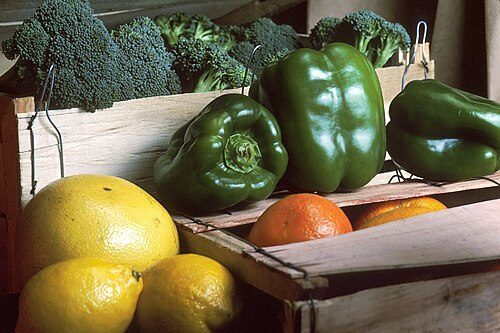

制作側の連想
電気ポットの部位を、配置図にしてみる
電気ポット(お湯をわかして保温する家電)の部位を図にしたもので、制作側の連想です。お店の理念・由来とは無関係で、実際の製品の仕様を示すものでもありません。 六つの部位に番号をふり、上の図と並べています。
凡例
六つの部位
- 1ふた(蒸気口つき)本体の上をふさぐ部分で、湯気の逃げ道になる小さな穴がある。
- 2持ち手本体の後ろ側につく取っ手で、持ち上げて運ぶときに手をかける。
- 3水位窓側面にある細長い窓で、中の水の量を外から見るための目盛り。
- 4給湯ボタン押すとお湯が出るボタンで、ロックの印とセットで描かれる。
- 5注ぎ口本体の前に突き出た口で、お湯の出口になる。
- 6電源ベース底の台座で、電源コードがつながる部分。
写真(イメージ)
写真(イメージ)





写真はイメージです。お店のものではありません。
ご案内
お店のこと(確認できたものだけ)
| 所在地 | 〒441-8132 愛知県豊橋市南大清水町元町２４３−１ |
|---|---|
| 電話 | 準備中 |
| 営業時間 | 準備中 |
| 定休日 | 準備中 |
| ご予約 | 準備中 |
| 駐車場 | 準備中 |
| SNS | Instagram @halucafe_20150512 |